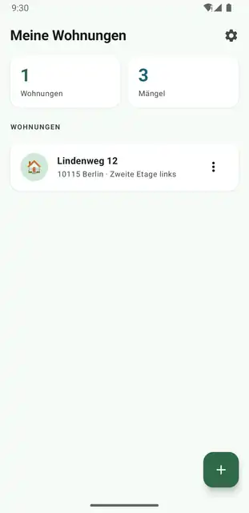

Fossy Protokoll
قراءة وكتابة
Fossy Protokoll helps tenants in Germany keep a verifiable record of defects in their flat: noise disturbance, mould, heating failures and more. From the recorded occurrences it builds a protocol covering a chosen period, and a factual defect notification addressed to the landlord. Both can be saved
✓ ترخيص مفتوح (GPL-3.0-or-later) · آخر تحديث: 2026-09-27
0.5.1الإصدار
9.0 MBالحجم
GPL-3.0-or-laterالرخصة
Open in Kanzتحميل APK (9.0 MB)
Download APK
SHA-256: 6d24c4e127448ce6fab838d44cab9bae437d210887905a133777f16c1875d016

امسح الكود لفتح صفحة التطبيق
Scan to open this app page
لو كنز مش متثبت عندك: نزّل متجر كنز.
Not installed? Get the Kanz store.